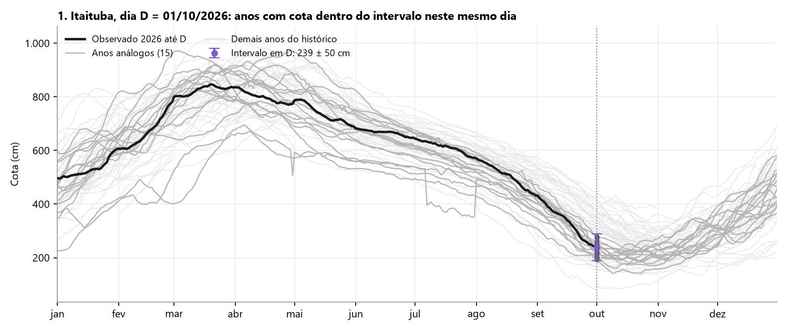
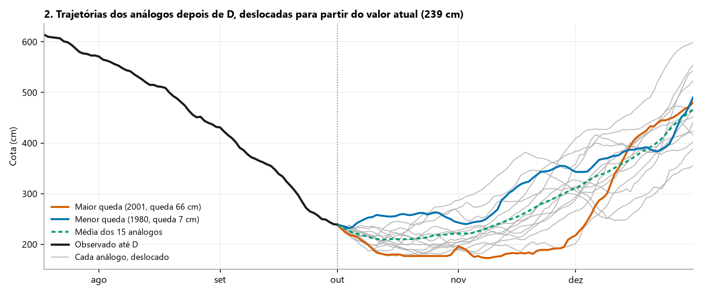
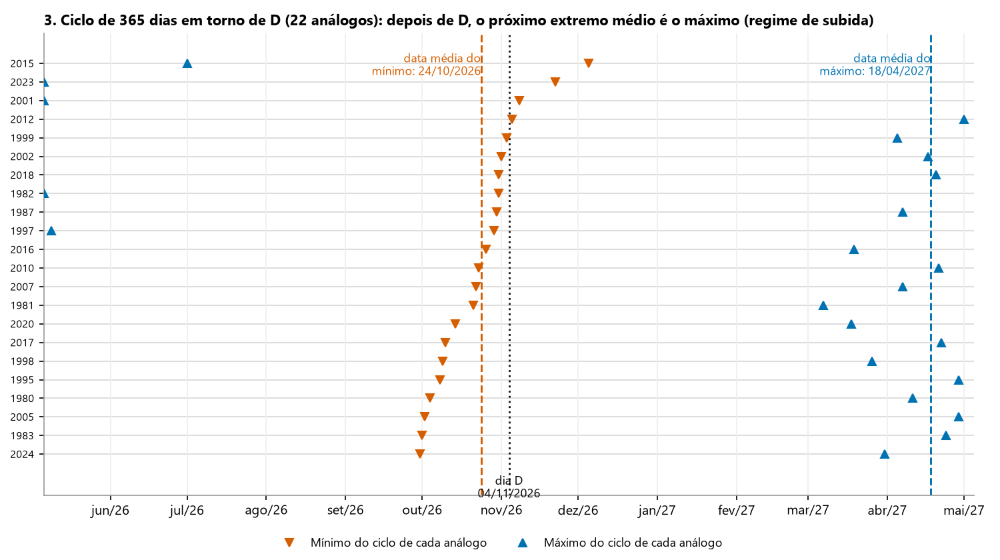
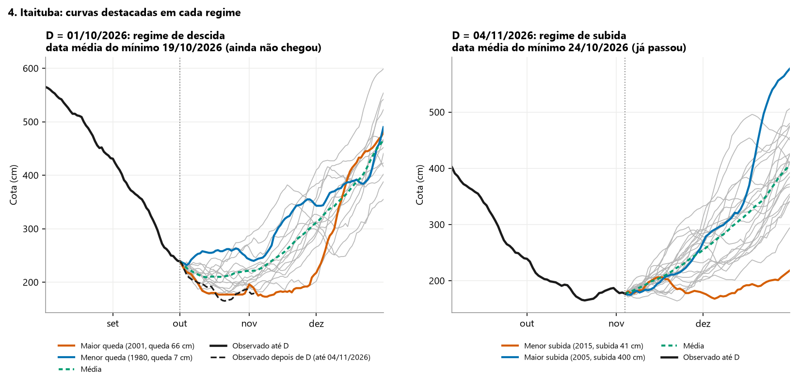

1. A ideia
A projeção responde a uma pergunta: se o rio se comportar daqui até o fim do horizonte como se comportou em anos passados que, nesta mesma data, estavam com cota parecida com a atual, que trajetórias são plausíveis? O painel não usa modelo de chuva nem previsão meteorológica. Ele usa apenas o histórico da própria estação.
O último dia com dado do ano corrente é chamado de dia D, e a cota nesse dia é a cota atual. Por padrão, a projeção vai de D até 31 de dezembro (seção 6).
As figuras desta página usam dados reais de Itaituba. Em cada exemplo, a série de 2026 foi
cortada no dia D indicado, para mostrar o painel como ele estava naquele dia, com a projeção
até 31/dez. As figuras são
geradas pelo script ferramentas/figuras_metodologia.py, que usa o mesmo algoritmo
do painel.
2. Anos análogos
Um ano do histórico é análogo quando, no mesmo dia e mês de D, a cota daquele ano estava dentro do Intervalo em torno da cota atual. O Intervalo é ajustável no painel, em cm ou em % da cota atual. Ao abrir, cada gráfico usa o menor Intervalo, de pelo menos ±50 cm, que reúne três anos análogos ou mais.
- Se o ano não tem dado exatamente no dia D, vale o dado mais próximo em até 3 dias, com preferência para o dia anterior em caso de empate. Sem dado nessa janela, o ano fica de fora.
- O ano também fica de fora se tiver menos de 80% dos dias com dado entre D e o fim do horizonte, ou se não tiver nenhum dado nos últimos 10 dias do horizonte.
- Com menos de três análogos, o painel mostra um aviso. Sem nenhum, não há projeção.

3. Trajetórias deslocadas
De cada ano análogo, o painel toma a série de D até o fim do horizonte e a desloca na vertical para que ela comece exatamente na cota atual. Assim, todas as trajetórias partem do mesmo ponto e passam a mostrar variações em relação a hoje. Lacunas internas de cada trajetória são preenchidas por interpolação linear e ficam marcadas no CSV e na memória de cálculo. A média é a média dia a dia das trajetórias deslocadas de todos os análogos.
Para cada análogo, o painel mede duas grandezas até o fim do horizonte:
- queda: cota em D menos o mínimo no horizonte;
- subida: máximo no horizonte menos a cota em D.

4. Regime dos análogos: descida ou subida
Antes de escolher as curvas destacadas, o painel decide se o conjunto de análogos está descendo rumo ao mínimo do ciclo ou já subindo rumo ao máximo. A decisão é do conjunto e vale para as duas curvas.
- Para cada análogo, o painel examina o ciclo de 365 dias centrado na data equivalente a D (182 dias antes e 182 dias depois) e localiza o dia do mínimo e o dia do máximo. Entram apenas análogos com dado em pelo menos 70% desses dias.
- Calcula a data média do mínimo e a data média do máximo dos análogos. A média é circular, própria para datas de um ciclo anual: um mínimo em 28 de dezembro e outro em 3 de janeiro têm média em 31 de dezembro, e não em junho.
- A partir de D, olha qual extremo médio vem primeiro. Se é o mínimo, o regime é de descida. Se é o máximo, porque a data média do mínimo já passou, o regime é de subida, mesmo que alguns análogos ainda desçam antes de subir.
O painel informa, acima de cada gráfico, o regime, as duas datas médias e o desvio-padrão circular de cada uma, em dias. O desvio mede o quanto os análogos discordam sobre a data do extremo e serve apenas de referência: a regra de decisão não o usa.

5. Curvas destacadas
O critério das curvas segue o regime e é o mesmo para as duas:
- Descida. ■ curva de baixo = análogo de maior queda; ■ curva de cima = análogo de menor queda.
- Subida. ■ curva de baixo = análogo de menor subida; ■ curva de cima = análogo de maior subida.
- ■ Média (pontilhada) dos análogos, em qualquer regime.
Na descida, cada curva tem o mínimo marcado com o valor; na subida, o máximo. A média segue o regime. Em empate na queda, decide a subida (a maior queda fica com o ano de menor subida); em empate na subida, decide a queda. Persistindo o empate, vale o ano mais antigo. A legenda mostra o ano de cada curva e a queda ou subida dele no horizonte.

6. Horizonte da projeção
Por padrão, o gráfico mostra o ano civil (jan–dez) e a projeção vai até 31/dez. O seletor Horizonte da projeção, em cada painel, permite projetar de 1 a 12 meses inteiros depois do mês do último dado; o mês do último dado não entra na conta. Nesse caso, o gráfico mostra 12 meses inteiros a partir do dia 1: com horizonte de 6 meses, aparecem 6 meses observados, o mês corrente até o último dado e 6 meses projetados. O botão Voltar para jan–dez restaura o padrão.
Quando o horizonte atravessa a virada do ano, cada ano análogo continua no ano seguinte a ele. O análogo cujo ano seguinte ainda não tem dados até o fim do horizonte sai do universo, com o motivo registrado na memória de cálculo. Por isso horizontes longos podem reduzir o número de anos análogos. A queda e a subida de cada análogo, a cobertura exigida e as datas de toque nos pontos de controle passam a valer até o fim do horizonte escolhido. O regime não depende do horizonte, porque o ciclo examinado é sempre o de 365 dias em torno de D.
7. Como ler e limites
- A projeção diz o que aconteceria se este ano repetisse o comportamento dos anos parecidos. Chuva fora do padrão histórico pode levar o rio para fora da faixa entre as curvas destacadas.
- Num ano de vazante atrasada, os análogos podem já ter passado do fundo enquanto o rio ainda desce. Nesse caso o regime é de subida e as curvas destacadas mostram pouca queda. As trajetórias cinzas continuam visíveis e mostram quais análogos ainda desceram antes de subir.
- Perto da data média do mínimo, o regime pode trocar de um dia para o outro, porque o conjunto de análogos muda com a cota.
- Nos rios de vazante tardia, como o Paraguai, o mínimo real pode ocorrer depois de 31/dez, fora do horizonte padrão. Um horizonte maior mostra esse trecho.
- O Intervalo controla o equilíbrio entre semelhança e quantidade: Intervalo pequeno reúne anos mais parecidos, porém poucos. Ajustá-lo mostra a sensibilidade da projeção.
8. Dados
- As cotas estão em cm e vêm do data lake da ANA. Cada dia usa a melhor fonte disponível: dado consistido do HIDRO, depois dado bruto, depois telemetria. A memória de cálculo mostra a cobertura de cada fonte, ano a ano.
- Em Porto Murtinho, nos dias sem nenhum dado da ANA, entra a régua da Marinha (CHN-6). A cada atualização, o painel compara as duas fontes nos dias em comum e descarta a da Marinha se a diferença indicar mudança de zero.
- Algumas estações usam apenas a parte da série comparável com o regime atual: Itacoatiara a partir de 2009 (a estação teve três referências de nível), Abunã a partir de 2014 (remanso da UHE Jirau) e Humaitá a partir de 1968 (série antiga em outra referência de nível).
9. Séries sintéticas do Tapajós
Os painéis de fundo lilás (Lago do Roque, Monte Cristo e Itapaiunas) são passos críticos de navegação entre Itaituba e Santarém, sem régua própria. A série mostrada é a profundidade disponível no passo, calculada dia a dia pelas equações do ábaco réguas–calado da Marinha do Brasil, com as cotas de Itaituba e Santarém em metros:
- Lago do Roque = 0,955 × Itaituba + 0,045 × Santarém − 2,15
- Monte Cristo = 0,825 × Itaituba + 0,175 × Santarém − 1,99
- Itapaiunas = 0,300 × Itaituba + 0,700 × Santarém − 1,36
O resultado é publicado em cm inteiros e existe apenas nos dias em que as duas bases têm dado. Valores iguais ou menores que zero indicam passo acima do nível d'água. A projeção por analogia funciona do mesmo modo sobre a série de profundidade.
10. Pontos de controle e exportações
Os pontos de controle são cotas de referência que o usuário digita no painel, como a cota mínima navegável. O gráfico marca as datas em que cada curva destacada e a média cruzam essa cota descendo (entrada) e subindo de volta (saída), com interpolação linear entre os dias vizinhos.
O PDF do conjunto, a memória de cálculo em PDF e o CSV são gerados no navegador com o Intervalo e o horizonte ajustados na tela. A memória de cálculo lista todos os anos candidatos com o motivo de inclusão ou exclusão, a queda e a subida de cada um e os dias do mínimo e do máximo do ciclo usados na decisão do regime.